ダッシュボードのデザインパターンギャラリーです。部品を1つずつ状態と振る舞いと一緒に並べ（1〜8章）、ウィジェットの表示・動き・画面・状態の流れを横に並べて比べています（9〜12章）。決まりの背景は仕様書、値と作り方は実装ガイド、実際の動きはダッシュボードで確かめてください。
各部品の見本は、左がライト、右がダークです（上の「テーマ」で片方だけにできます）。
| 原則 | 決まり |
|---|---|
| やりたいことは2〜3手 | 押す・入れる・選ぶを1手と数える（読む・スクロールは数えない）。主な操作はウィジェットの表面に置き、それ以外は右クリック・長押しのメニューへ。前回の値と既定値で1手目を省く。 |
| 例外は+1手まで | 初回だけの準備（端末をつなぐ、許可、AIの準備）と、取り消せない操作の確認。途中でやめても元の画面に戻れること。 |
| 戻るのは1手 | 失敗や「使えない」状態からは、知らせのボタン1つで次へ進める（ウィジェット内の知らせ）。 |
| 言葉は必要最低限 | 知らせは1文、25字が目安。何が起きたかだけを書き、どうするかはボタンの名前で伝える（「〜してください」を文で書かない）。謝らない。 |
| 同じことを2回言わない | 見出しと説明、ボタンと横の文が同じ内容なら片方を消す。印や数で分かることは文にしない。 |
| 名前をそろえる | 操作の名前と結果の知らせは同じ言葉（「保存」→「保存しました」）。同じものは画面が変わっても同じ名前。ボタンは動詞で2〜6字。繰り返すときは「もう一度」（条件を変えるなら「JPEGでもう一度」）。 |
| 長い説明は操作ヒントへ | 使い方の説明は「操作ヒント」と最初の案内にまとめ、ウィジェットの中には書かない。この2つは説明を求められる場なので、文の長さの目安は当てはめない。安心のための一言（「端末の外に送りません」）だけはウィジェットに残す。 |
| やりたいこと | 手順 | 手数 |
|---|---|---|
| タイマーを始める | ▶ | 1 |
| 翻訳する | 文を入れる → 翻訳 | 2 |
| スクリプトを実行する | スクリプトを選ぶ → 実行 | 2 |
| 画像を変換して保存する | 落とす → 保存 | 2 |
| ウィジェットの設定を変える | 右クリック・長押し → 設定 → 変える | 3 |
| ウィジェットの大きさを変える | 編集 → ウィジェットを選ぶ → 大きさ | 3 |
| 失敗から戻る | 知らせのボタン | 1 |
| ホームへ戻る | ⌂（Home） | 1 |
| 探して置く | 一覧の検索に入力 → ＋ | 2 |
| 時計やスケッチを全画面にする | 編集 → ウィジェットを選ぶ → 全画面 | 3 |
| 端末をつなぐ（初回） | 設定 → 端末をつなぐ → コードを入れる → 確かめる | 4（例外） |
| 状態 | 見た目 | 決まり |
|---|---|---|
| 通常 | 各部品の基本の見た目 | — |
| ホバー | 塗りを1段濃く（--fill → --fill2、塗り無し → --fill） | マウスのある端末だけ（@media (hover: hover)）。タッチ端末で押したあとに残らないようにする |
| 押下 | 0.96倍に縮む（0.1秒） | 押せるもの全部（チップ・アイコンボタン・帯のボタン・選択の並び・戻る・一覧の名前・大きさのマス）。動きを減らす設定では縮めない |
| フォーカス | 2px の --a1 の輪郭、2px 外側 | キーボードで来たときだけ（:focus-visible）。ガラスの上でも輪郭は不透明 |
| 選択中 | 文字色で塗る（.on）。主な操作は --a1 | aria-pressed か aria-checked と必ず組にする |
| 無効 | 不透明度0.4、ホバーと押下なし | すべての押せる部品で同じ。なぜ押せないかを近くに書けるときは書く |
| 押せる領域 | 高さは3つ：--bh-s 36px（帯や行の中）・--bh 44px（ふつう）・--bh-r 48px（行全体）。行の中の補助の印は24×24px以上 | ボタン要素そのものを押せる大きさにし、見た目の点や丸は中に描く |
| トークン | 値 | 使う場所 |
|---|---|---|
--dur-1 | 100ms | 押した反応 |
--dur-2 | 150ms | ホバーと色の変化 |
--dur-3 | 200ms | 小さな出入り（トースト、メニュー、スイッチのつまみ、画面の点） |
--dur-4 | 250ms | 大きな面と量の変化（シート、ダイアログ、進み具合、グラフの棒） |
--ease | cubic-bezier(.2,.9,.3,1) | 出るときの標準 |
--ease-out | ease-out | 消えるとき、進捗 |
動きは既定で止めておき、prefers-reduced-motion: no-preference のときだけ付けます。止めたときは、移動と拡大を使わず、必要なら0.12秒以内の不透明度の変化だけにします。繰り返しの動き（読み込みの帯、スケルトン、スピナー）は止め、文字で状態を伝えます。
| 層 | 値 | もの |
|---|---|---|
| ボード | 0〜2 | ウィジェット、選択の輪、状態の覆い |
| 知らせの帯・下部バー | 7 | 受け取り・新しい版の帯、編集中の帯、下部バー |
| シート・案内 | 8〜9 | 設定、一覧、追加、操作ヒント、最初の案内 |
| 前面表示 | 21〜22 | 大きく表示したウィジェット、置かずに使う帯 |
| トースト | 40 | 知らせ |
| 読み込みの帯 | 45 | 画面上端の細い帯 |
| ツールチップ | 50 | 名前の吹き出し |
| ダイアログ | 59〜60 | 暗幕と確認 |
色は役割の名前で使い、値を直接書かない。ライトとダークの値は light-dark() で1つのトークンに持つ。
大きさは8段のトークンだけ使う。主役の数字だけはコンテナ単位で、枠の大きさに合わせて伸び縮みする。
--fs-3xl 30px--fs-2xl 22px--fs-xl 18px--fs-l 16px--fs-b 14px--fs-m 13px--fs-s 12px--fs-xs 11px--fs-3xl 30px--fs-2xl 22px--fs-xl 18px--fs-l 16px--fs-b 14px--fs-m 13px--fs-s 12px--fs-xs 11pxfont-variant-numeric: tabular-nums）。見出しは置かない（読み上げ用の見えない見出しは枠が持つ）。ガラスは3段だけ。中身の部品（入力欄、チップ）はガラスにしない。ガラスの上にガラスを重ねない。
--glass--glass2--sheet--glass--glass2--sheet5段だけ使う。
--rr 丸--r4 26px--r3 18px--r2 12px--r1 6px--rr 丸--r4 26px--r3 18px--r2 12px--r1 6px--rad）に従う。面の高さで3段。ガラスの縁（--rim）と組で使う。
--el1--el2--el3--el1--el2--el3--knob。.i24の枠で線の太さ1.6、角は丸。20px で使い、帯の中では18px、行の中の小さな操作は16px。
aria-hidden="true"。名前はボタンの側に付ける。短くてよいが、同じ名前で別のことをするボタンを作らない。押せる部品を、同じ状態で横に並べました。同じ役割なのに見た目の変わり方が違うものを探すための表です。
| 部品 | 通常 | ホバー | 押した | フォーカス | 選択・オン | 無効 | さわる |
|---|---|---|---|---|---|---|---|
チップ.chip | |||||||
主な操作.chip.pri | — | ||||||
危険な操作.chip.bad | — | ||||||
小さなチップ.chip.sm | |||||||
選択メニュー.chip.sel | |||||||
丸ボタン.btn | |||||||
アイコンボタン.nb | |||||||
帯のボタン.abb | |||||||
選択の並び.seg .sg | |||||||
スイッチ.sw | — | — | |||||
入力欄.inp | — | — | — | ||||
メニューの項目.mi | 大阪 | 大阪 | 大阪 | 大阪 | 大阪 | — | 大阪 |
画面の表示.pgc | — | — |
:hover・:active・:focus-visible の規則を、このシートでクラスに写して並べています。見た目は本体と同じ規則から出ています。ボタンは見た目の名前ではなく、役割で選びます。
| 役割 | クラス | 大きさ | 塗りと状態 |
|---|---|---|---|
| ① 文字のボタン | .chip（大）.chip.sm・.jlb・.pva、帯や行の中のチップ（小） | 大44px・小36px | 通常は塗り。控えめ（.gh）は塗りなし、提案（.sm）は線だけ。選んでいる＝文字色、主な操作＝青、危険＝赤 |
| ② アイコンボタン | .btn（塗りあり）.nb・.abb（塗りなし） | 44×44px（帯の中は文字に合わせて横に伸びる） | オンの機能＝青 |
| ③ 選択の並び | .seg .sg | 44px | 選んでいる＝文字色 |
| ④ 行全体のボタン | .cnb・.mi・.dsc | 48px（メニューの項目は44px） | ホバーで行を塗る。角丸12px |
.chip文字のボタンの基本形。シートの中の操作、ダイアログの選択、帯の主な操作に使う。
Enter、Space。.chip.sm「＋項目」「見本で試す」「表示する」など、提案や補助の控えめなボタン。塗らずに縁の線で示す。
縁の線は --fill2 で薄めです。3:1 にするなら --line に寄せます。
.btnウィジェットの中の主な操作（再生、録音、TODOの追加）。塗りのある丸。
aria-pressed。.nb下部バー、シートの見出し、行の右端。塗りが無く、ホバーで塗る。
.abbウィジェットの下の帯（.ab）に並ぶ操作。アイコンか短い文字。
.bkシートの左上。行き先の名前を添える（「‹ 設定」）。閉じるのではなく1つ前の層に戻る。
Esc でも同じ動き。.inp1行の入力。検索、名前、URL。輪郭は --line の1px。
aria-label を必ず付ける。プレースホルダーを名前の代わりにしない。.seg / .sg同じ画面の見せ方を2〜4個から1つ選ぶ。5個以上や、利用者が作る項目は切替チップ（下）か選択メニュー（下）。
role="group" と aria-label）、選んでいるものに aria-pressed="true"。Tab で1つずつ移動。.tgts .chip利用者が作った項目（スクリプト、受け渡しの送り先）を切り替える横並び。あふれたら横にスクロールする。
.swすぐ効く入り切り。保存ボタンは置かない。
role="switch" と aria-checked。名前は行の文言と同じ。.rg連続した値（透明感、品質、音量）。値は横か見出しに数字で出す。
Home、End。.sz設定パネルでウィジェットの大きさを選ぶ 4×3 のマス。
pg: true のウィジェット（時計とスケッチ）だけ、マスの下に「全画面」を出す。選ぶと1画面を占め、マスはどれも選ばれていない見た目にする。位置を固定は使えない。min・max と、その端末のボードの列数・行数に収まるマスだけ。収まらないマスは無効の見た目（不透明度 .4）で、押しても変わらない。保存した大きさが入らない端末では縮めて出し、保存値は変えない。aria-pressed）を持つ。.catq / .cath「ウィジェットを追加」の一覧の上の検索欄と、最近の検索。打つたびに絞り込む。
見つかりません。ほかの言葉で探してください。
見つかりません。ほかの言葉で探してください。
kw）。ひらがな・カタカナ、全角・半角、大文字・小文字は区別しない。空白で区切った語はすべて含むものだけ。.ckTODO の完了。丸い印で、完了すると --a1 で塗る。
aria-pressed で完了を伝える。.sel + .mnu[role=listbox]選ぶものが5個以上あるとき（日の出・日の入りの場所、ボードが5つ以上のときの「ホーム」「追加先」「置くボード」）。4個までは選択の並びのまま。ホームは常にこれ。
↑↓ で移動、Enter で決定、Esc で閉じて元に戻る、文字を打つとその文字で始まる項目へ。12個を超えたら先頭に絞り込みの欄。role="listbox"、選んでいる項目に aria-selected。.stp小さな整数。カウンターの数、割り勘の人数、トーストの表示秒数、スライドの間隔、メモの文字サイズ、ポモドーロの集中時間（5分刻み）。スライダーより正確に、入力欄より押しやすく。
↑↓、PageUp / PageDown で10ずつ。role="spinbutton"（または number 入力）と最小・最大。.fld2書き方の説明と、間違いの知らせ。独自の検索URL、リンクのURL、税率、アラームの時刻、カウントダウンの日付。文字の設定は、見出しを上に置く縦の並びにする。
aria-invalid と、文への aria-describedby。.inp[type=time|date]アラームの時刻（ウィジェットの設定に追加）、カウントダウンの日付。ブラウザの入力を入力欄の見た目にそろえて使い、独自の暦は作らない。
.toast操作の結果を短く知らせる。画面上部（設定で下部）に積む。
role="status" の入れ物に入れる。フォーカスは移さない。--dur-3）ease-out で出入りする。.rcv利用者の判断が要る知らせ（受け取り確認、新しい版）。時間で消えない。
role="status"。.epill / .offp今の状態を示すだけの帯。押せない。
.skl / .sp / .prg / .pgb時間がかかるときの4種類。何をどれだけ待つかで使い分ける。
.cdot / .dtag / .newdot状態を小さく添える。必ず読み上げ用の文字と組にする。
.empt利用者が書きためるものが空のとき。何をすれば埋まるかを1行で。入口が同じ面に無ければボタンを1つ。
上の欄に書いて Enter で追加します
上の欄に書いて Enter で追加します
.tipアイコンだけのボタンの名前。マウスで0.55秒、タッチでは長押し。
Esc で消える。ツールチップの上にポインタを動かしても消えない（離れて0.25秒で消す）。.dlg取り消せない操作の確認と、必ず読んでほしいお知らせ。それ以外はトーストか帯にする。
置いてあるウィジェットは未配置に戻ります。この操作は取り消せません。
3台の端末に最新の設定を反映しました。
置いてあるウィジェットは未配置に戻ります。この操作は取り消せません。
3台の端末に最新の設定を反映しました。
inert。Esc でキャンセル。.tcard初回だけの5手順。対象のボタンを輪で示す。最後は環境ごとの「使い始めの準備」。
「一覧」から目的のウィジェットへ移動できます。
「一覧」から目的のウィジェットへ移動できます。
.perm現在地（日の出・日の入り）、マイク（録音）、通知（ポモドーロ）、クリップボード（スクリプト）。ブラウザの問い合わせを出す前に、なぜ要るかを説明する。断られたときの代わりの手段も出す。
登録の net / perm登録に net と perm があれば、ツールの中身に関係なく決まった場所に出す。ツールで別の出し方を作らない。
.fsw-act）。未接続は輪、オフラインは --a2 で塗る。点と組で読み上げ用の文。オフラインは前回の内容をそのまま出し、無ければ「失敗」の知らせ。.noteウィジェットの中で続く状態の知らせ。形は1つ（印・文・操作1つ・色で重さ）にそろえ、置く場所だけを原因で決める。
ブラウザの位置情報が許可されていません
| 原因 | 置く場所 | 大きさ | 例 |
|---|---|---|---|
| 入力が足りない・形が違う | その入力のすぐ下（入力欄の補足とエラー） | 欄の中 | アラームの時刻、税率 |
| 実行の結果が失敗した | 結果の欄・一覧の行の中 | 欄の中 | スクリプトの「クリップボードが空」、画像変換の「読めない形式」 |
| ウィジェット全体が使えない | 中身ごと置き換える | 置き換え | 現在地を使えない、未接続、許可が要る |
| 使えるが、待つ・気をつける | 操作の帯のすぐ上 | 帯 | AIの準備中、古いデータを表示中 |
| 1×1 で入りきらない | トーストに出す（ウィジェット名を頭に付ける） | トースト | 「天気：現在地を使えません」＋都市を選ぶ |
| 部品 | 置く場所 |
|---|---|
状態の文（.stm、空・失敗） | 置き換え |
許可のお願い（.pmw） | 置き換え（見出し・説明・操作2つまで） |
AIの準備の帯（.ais） | 帯（待つ） |
スクリプトのログの行（.jlg）、画像変換の失敗の行（.frow.err） | 欄の中 |
予定の提案（.sug） | 知らせではなく提案なので、このまま |
ブラウザの位置情報が許可されていません
| 原因 | 置く場所 | 大きさ | 例 |
|---|---|---|---|
| 入力が足りない・形が違う | その入力のすぐ下（入力欄の補足とエラー） | 欄の中 | アラームの時刻、税率 |
| 実行の結果が失敗した | 結果の欄・一覧の行の中 | 欄の中 | スクリプトの「クリップボードが空」、画像変換の「読めない形式」 |
| ウィジェット全体が使えない | 中身ごと置き換える | 置き換え | 現在地を使えない、未接続、許可が要る |
| 使えるが、待つ・気をつける | 操作の帯のすぐ上 | 帯 | AIの準備中、古いデータを表示中 |
| 1×1 で入りきらない | トーストに出す（ウィジェット名を頭に付ける） | トースト | 「天気：現在地を使えません」＋都市を選ぶ |
| 部品 | 置く場所 |
|---|---|
状態の文（.stm、空・失敗） | 置き換え |
許可のお願い（.pmw） | 置き換え（見出し・説明・操作2つまで） |
AIの準備の帯（.ais） | 帯（待つ） |
スクリプトのログの行（.jlg）、画像変換の失敗の行（.frow.err） | 欄の中 |
予定の提案（.sug） | 知らせではなく提案なので、このまま |
role="alert"、待つは role="status"。置き換えは見出しにフォーカスを移さない。.wガラスの面。中身は14pxの余白の内側に置く。見える見出しは持たない。
role="group" で、見えない見出し（登録名）で名付ける。.sheet設定、一覧、追加、操作ヒント。見出しの行、節の見出し、設定の行でできている。
--dur-4）ease-out で出る。inert。閉じたら開いたボタンへフォーカスを戻す。.tmpbar置かずに開いているときだけ、下に出る。
.fsw大きさを「全画面」にしたウィジェットの共通の形。ツールが変わっても、場所と役割は変えない。
data-w はツールのID、名前はツールの名前のまま。編集中は点線の枠、中身は押せない。cqw cqh。.wmk編集中に、位置を固定・大きさを固定・人前では隠すにしたウィジェットの右上に出す。
.pgc画面の点は7つまで。8画面以上（または点が入りきらない幅）では点の代わりに「3 / 12」と進み具合の線を出し、押すと一覧を開く。
ウィジェット固有だがほかでも使えるように切り出した部品と、メニュー・バッジ・キーの表示・折りたたみの節。
.dropファイルを受け取る。中身は file 入力を包んだ label で、キーボードとタップでも選べる。
--a1 で薄く塗る。.frow処理するファイル1件。
.jse / .jconスクリプト。色分けした行を、透明にした入力欄の下に重ねる。
.sunb / 雨の棒1日や数時間を横の帯で見せる。傘と日の出・日の入りで同じ骨組み。
role="img" で、時刻と今の状態を文にした名前を付ける。.crow「ウィジェットを追加」の1行。名前を押すとその場所へ、▶ で置かずに使う、＋ で追加。
.bdg未読の数（受け渡し、届いたもの）。下部バーの一覧ボタンと、その行に付ける。
aria-hidden。kbd操作ヒントと、ツールチップ（一覧 /・編集 E・設定 ,）でキーを示す。1文字のキー操作を切ったら出さない。ボタンには aria-keyshortcuts。
.dsc全体の設定（外観、レイアウト、操作、ローカルAI、表示テスト、データ）。節ごとに開閉し、開いている節をこの端末に覚える。
aria-expanded。同じウィジェットを、小型・通常・編集中で並べました。ダッシュボードの規則と見本の状態から書き出した表示です（押しても動きません）。
小型でも主役の数字を残す。秒は小さく添える。
1×1では湿度を外し、朝・昼・夜の気温だけを残す。
小型ではリングを縮め、再生とやり直しを縦に積む。
1×2では入力欄と行を縦に積む。
2×1では本文だけを残す。予定の提案は出さず、書式の帯は入力中だけ出す。
ページの中の文字を選んでから実行します
▶ で実行すると、結果がここに出ます
ページの中の文字を選んでから実行します
console.log と return の値がここに出ます
ページの中の文字を選んでから実行します
console.log と return の値がここに出ます
2×2ではエディタを隠し、入力・実行・結果を残す（仕様書の決まりどおり）。
操作に返す反応と、画面が変わるときの動きの一覧です。本体と同じ時間と曲線で再生できます。
時間はトークン4つだけ：--dur-1 100ms 押した反応／--dur-2 150ms ホバーと色／--dur-3 200ms 小さな出入り／--dur-4 250ms 大きな面と量の変化。受け取った行の光（600ms）だけは目を引くための例外。読み込みの繰り返しと背景の模様は別枠。
.chip ほかそのまま押したことを指の下で伝える。
.nb ほかそのままマウスで指せることを知らせる。
.swそのまま入り切りの結果を、つまみの位置で見せる。
.toastそのまま操作の結果を、作業を止めずに知らせる。
.sheetそのまま設定や一覧を、今の画面の上に開く。
.dlgそのまま取り消せない操作の前に確かめる。
置いてあるウィジェットは一覧に戻ります。
.dotそのまま今どの画面かを、伸びた点で示す。
.pagesそのまま画面が変わったことを、横の動きで伝える。
.sp / .sk / .pgbそのまま待っていることを伝える。終わりが分からない待ちに使う。
.prgそのまま終わりが分かる待ち（変換、ダウンロード）。
.barそのまま値が変わったことを、棒の伸びで見せる。
.srowそのまま新しく届いたものに目を向けさせる。
デスクトップとスマホ、ライトとダークで、同じ場面を並べました。
画像は見本のデータで描いた静止画です（ダッシュボードの規則と見本の状態から書き出し、10:24 に固定）。上の「テーマ」でライトとダークを切り替えます。「並べる」のときはライトを出します。
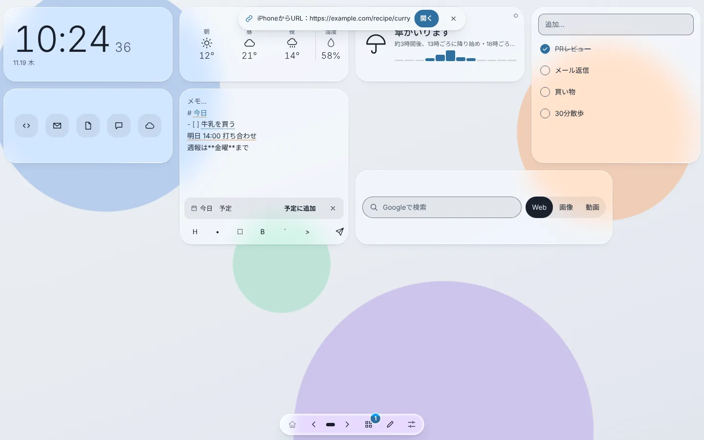
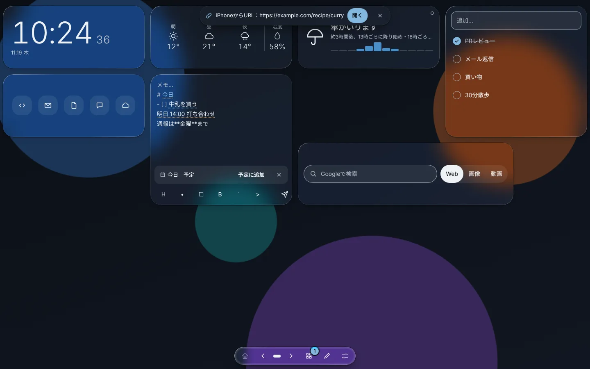
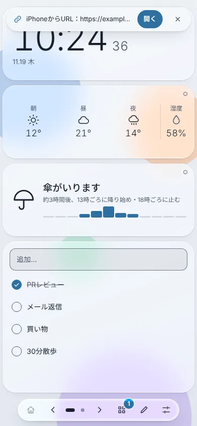
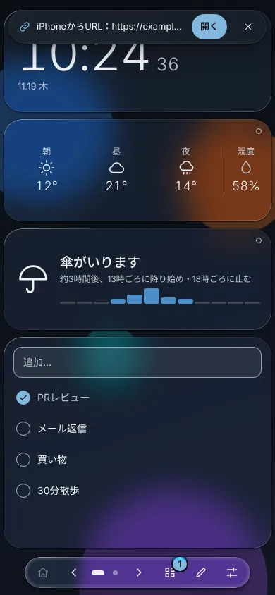
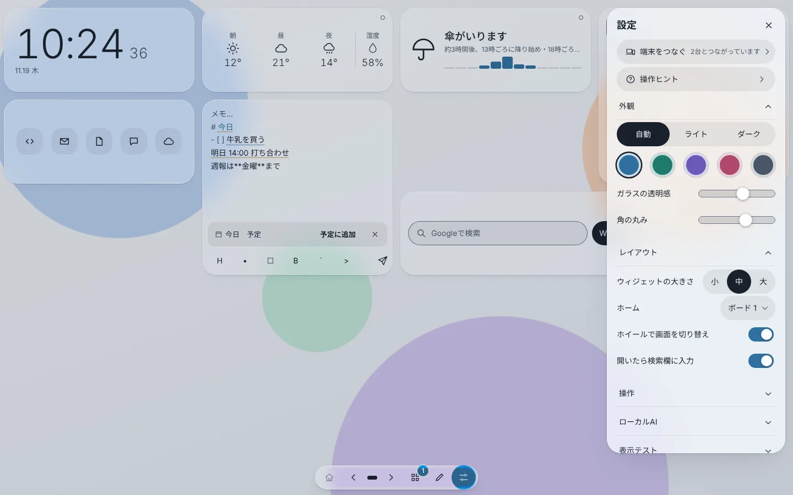
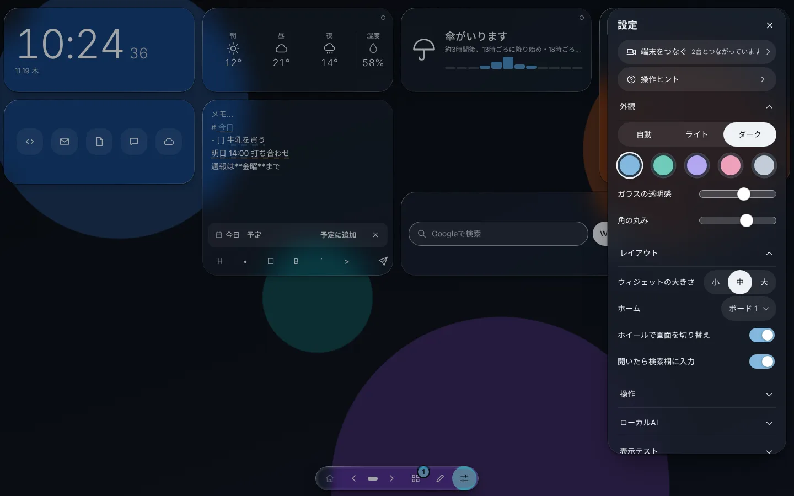
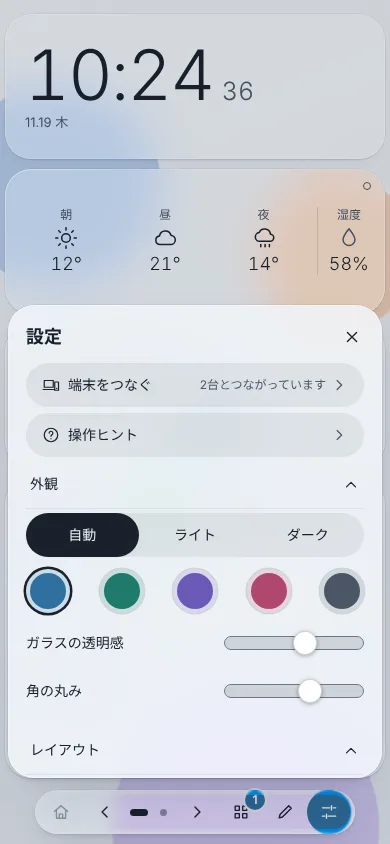
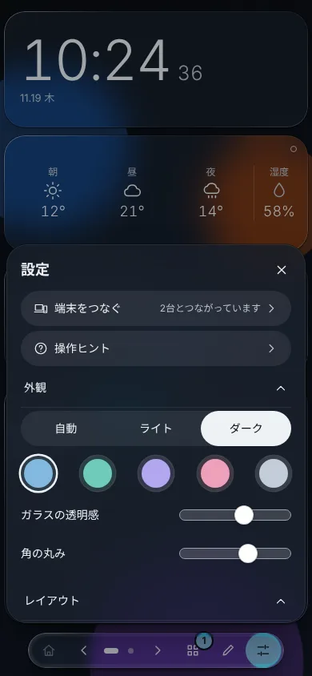
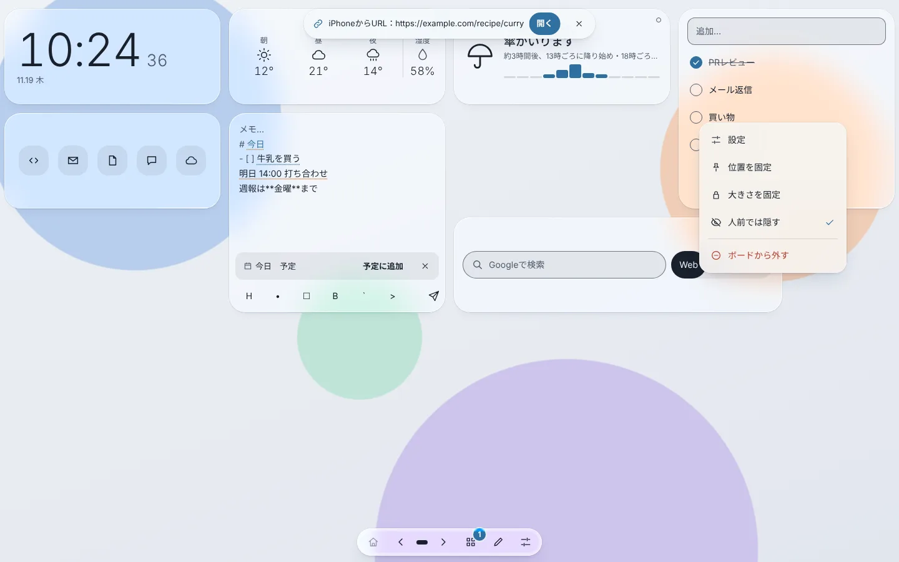
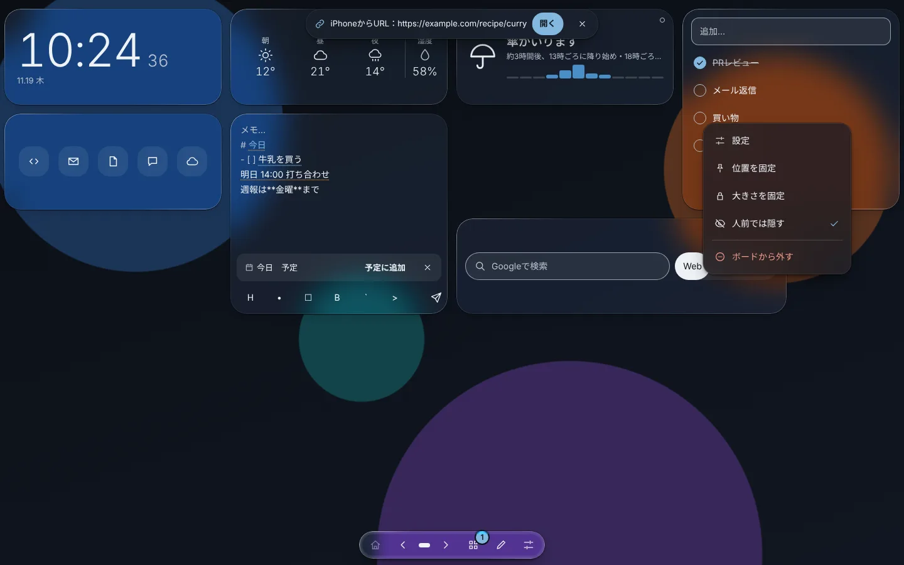
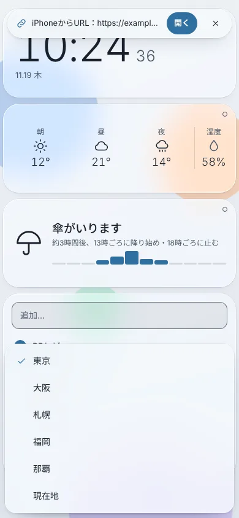
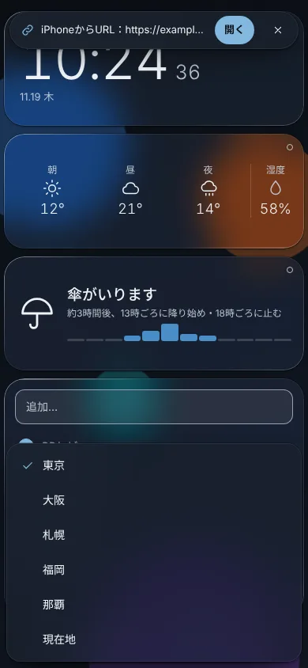
| 部品 | デスクトップ | スマホ（幅720px未満） |
|---|---|---|
| 画面 | 8列前後。矢印・ホイール・キーで送る | 2列。スワイプで送る |
| シート | 右上に浮く幅324px | 下から出て、画面の幅いっぱい |
| 選択メニュー | 押したボタンのそばに浮く | 幅520px未満は下からのシート |
| その他メニュー | 右クリックの位置に出る | 0.7秒の長押しで、指の位置に出る |
| 受け取りの帯 | 上の中央に浮く | 上の端から端。時計の数字に重なる |
| 下部バー | 中央に浮く | ホームバーの分だけ上げる（env(safe-area-inset-bottom)） |
| テーマ | 自動・ライト・ダーク。壁の色と透明感の式が切り替わる（実装ガイド2章）。ガラスの上の文字はどちらも 4.5:1 以上 | |
ウィジェットごとに、状態がどう移るかを左から順に並べました。矢印の上は、次の状態に移るきっかけです。
通信するウィジェット（天気、GitHub、RSS）は同じ形。ガラスの面に重ねて状態を出す。
まだ何もありません
「接続する」から始める。
形だけ先に出す（スケルトン）。
前の値を薄く残し、右上で回す。
取得できませんでした
最終更新 09:42
「もう一度」と最終更新の時刻。押すと読み込みへ戻る。
AIの準備は上の細い帯で知らせる。翻訳とチャットで共通。
容量と「準備する」。
進み具合の線と、止めるボタン。
回る印と「AIを読み込み中…」。
帯が消える。
理由と「もう一度」。
結果の欄と下の状態の行で知らせる。エラーは行に印を付ける。
ページの中の文字を選んでから実行します
console.log と return の値がここに出ます
結果の欄に、何が出るかを書く。
ページの中の文字を選んでから実行します
止めるボタンと経過時間。ログは届いた順に出す。
ページの中の文字を選んでから実行します
戻り値と型、かかった時間。
ページの中の文字を選んでから実行します
行の印と「2行目へ」。直して再実行で復旧。
理由と「手入力にする」を結果の欄に出す。
ドロップの面が、追加すると一覧に変わる。
「画像をドロップ」と「見本で試す」。
全体と1枚ずつの進み具合。
減った量と保存ボタン。
理由と「選び直す」。大きすぎるときは長辺を下げて、書き出せない形式はJPEGでやり直せる。
中身が無いときは、何をすれば増えるかを1行で。
上の欄に書いて Enter で追加します
「上の欄に書いて Enter で追加します」。
送ったものと届いたものがここに並びます
送り方の案内。
相手の確認を待つ。
新しい行を強調し、一覧ボタンに件数。
許可が要る機能は、ブラウザに聞く前にウィジェットの中で説明する。
理由と「位置を使う」「都市を選ぶ」。
直し方と、もう一度・都市を選ぶ。
選んだ都市で表示。